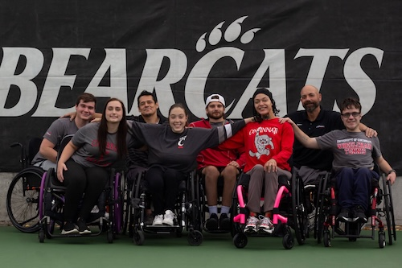
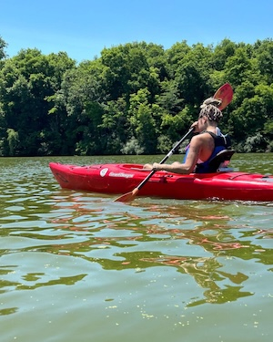
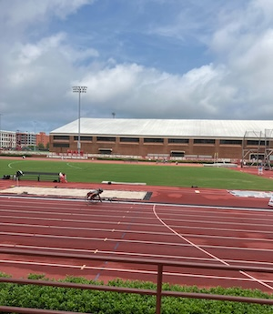

My experience with adaptive athletics



I started my experience with adaptive athletics in 2023 and since then have been able to particpipate in a number of different sports. The very first sport that I tried was wheelchair basketball. Although I didn't stick with it, it was a good experience to try and it helped open the door to many new sports. After that I tried skiing for the first time in my life and it was one of the funnest experiences I have ever had. Out of all of the different sports I have tried my absolute favorite is a tie between handcycling and track and field. Both of these sports allow me to feel independent and fast which are some of the greatest feelings.
Sports events
Participated Sports
- Skiing
- Basketball
- Handcycling
- Waterskiing
- Mountain Biking
- Track & Field
- Tennis
- Golf
- Pickleball
Events I've Won
- 2025 Flying Pig 10K Women's Handcycle Division
- Alabama Track & Field Meet Events: Women's 100m, 200m, 400m, 800m, 1 mile
- Bluegrass 10,000 Women's Handcycle Division